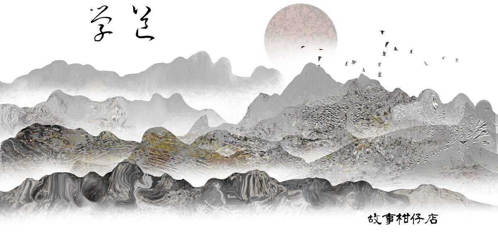

玄墨行者．學道（二）
☯一章 學道（二）☯
孤峰腳下，是一面高聳石壁，卻突兀鑲著約四米高的厚實木牆。深褐色木紋上挨擠著細密年輪，遠看倒像一張張吶喊著的嘴。
木牆沒有閂，也沒有鎖頭。大曲隨手拔起幾根雜草，搓成一股草莖，往木板與地面的接縫處伸進去，將添了韌性的草莖往木牆底探去，摸索一下才準確插進一枚小洞。
木牆原來不是牆，而是一扇門，寂靜無聲緩緩升起。
「還是大曲厲害，不像我撓半天還找不到開關。」捲髮少年雙手比出大拇指。
大曲面不改色，視線隨著木牆上升。捲髮少年自討沒趣，嘀咕著：「不就是扇門嘛，搞得機關重重。」
虹月扯了下他的衣袖，示意他安靜。木牆已升至頂點，才知孤峰內別有洞天。映入眼簾的是一片長形空地，頂上一道細長瀑布垂直落下，恰好將空地分為對稱兩半，再往前望去，又是一整面灰白色石牆。
大曲一行人倒退繞行瀑布三圈，再倒退踏進左半邊廂房。中央擺著個香爐，四周散落幾個蕎麥彀蒲團。橫生藤蔓爬走側邊石壁，織成一個個格子。格子裡各自放著木製的小型連弩車、投石器、轉射機等器械模型。
捲髮少年拿起一部藉車把玩，說：「大曲，這是你改良的？一天到晚做這，不嫌煩哪？」
「拾兒，說過幾次了，怎麼老是對你師哥沒大沒小？」
低沈如深潭的聲音冷不防從身後傳來，被點名的拾兒一抖，藉車竟滾出手心。
幸虧虹月眼明手快，立刻勾起腳掌，模型就這麼安穩地落在腳踝上。她腿使一巧勁，藉車朝空中畫了個圓弧，物歸原位。
大曲連忙作揖，喊了聲師父；虹月和拾兒連忙跟進，喊了聲大師伯。
「虹月，挺機靈的。啊？」聲若潭水的玄天樞拍拍大曲的肩，逕自坐定正對香爐的蒲團，眼神始終沒有離開手中書卷。
「大師伯，虹月不敢。」她紅著臉，急忙坐下，大曲和拾兒則分踞她的兩側。
天樞一頭及肩黑髮，唯兩鬢及鬍髭雪白，身穿一襲墨黑長袍，襯上他一張毫無血色的瘦臉，就連指甲也是蒼白的，整個人看來無色無彩。僅那一對琥珀色眼珠，透著威勢。
「早課遲到，想來《神異術》都背得爛熟了？」天樞捧書沈吟一會，骨爪般的手伸進香爐，掬起一把香灰猛然灑向空中。
白茫茫煙塵裡竟飛出一隻大鳥，額前、胸前及兩翼皆有神秘印記，它噗撲拍翅，眼見就要啄向他們。
「北海鳥妖，其高千呎，頭紋曰風、胸紋曰林、左翼紋曰火、右翼紋曰山。喜魚厭畜，翅羽無堅不摧，唯尾翼懼火，尤其香火。」大曲看著香爐，連珠砲念出一大串。說也奇怪，大鳥就這麼消失了。
又一把香灰灑出，這次騰空冒出的是一衣著襤褸的人形，卻長著虎爪，露出尖牙直撲而來。虹月眼睛眨也不眨，朗聲念道：「西荒之中有人焉，長短如人，著敗衣，手虎爪，名獏㺔。伺人獨行，輒食人腦。或舌出盤地丈餘，人先聞聲，燒大石以投其舌，乃氣絕而死。」
天樞勉為其難點點頭，沉聲問：「拾兒，怎麼你都沒反應？嫌題目太簡單？」
「我沒背啊。」拾兒朗聲說，突然意識自己態度不妥，搔搔頭，囁嚅道：「《神異術》不過就是本動物百科，背了沒意思。」
「沒意思？」天樞維持沈穩聲調，「你師父沒教你，《神異術》是我們玄墨行者的立族經典嗎？」
「師父沒讓我背書呀！他說世間萬物，非得親自走一遭不可。」
提起老三玄天璣，拾兒反倒理直氣壯起來，虹月都要把他的鞋踩破了也攔不住那張嘴。
「那好。」天樞的臉氣又更蒼白了些，大曲連忙向前想安撫，卻遭師父拂袖揮開。
天樞旋身站起，黑袍順風張揚起來，如一筆未完的水墨，捺在他身後的石牆上。
